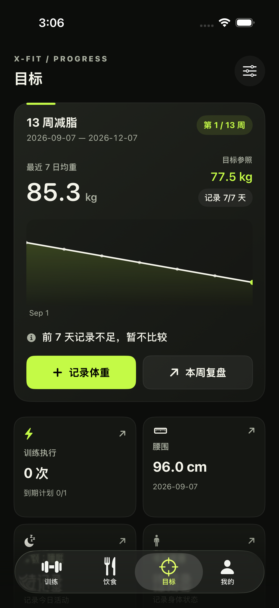

X-FIT / GOAL REFINEMENT
目标首页 · 运行实图
根据已确认的 A「目标轨迹」落地。截图来自 iPhone 17 Pro 模拟器，展示真实 SwiftUI 页面，不是静态效果图。

本地验证通过
这一版解决了什么
- 把 13 周目标、当前均重、目标参照和记录覆盖率合并成一个视觉主体。
- 趋势图直接承接目标解释，数据不足时明确显示“暂不比较”。
- 记录体重是唯一荧光绿主操作，周复盘保持清楚但降低视觉抢占。
- 训练、腰围、步数、睡眠和体感使用紧凑指标块，不再像设置菜单。
4 / 4目标统计单元测试
4 / 4核心与语义 UI 用例
PASS模拟器构建
待连接真机覆盖安装
辅助字号可达已经通过自动化；普通字号仍是默认视觉。医学未知状态、历史版本和真实记录语义没有改变。